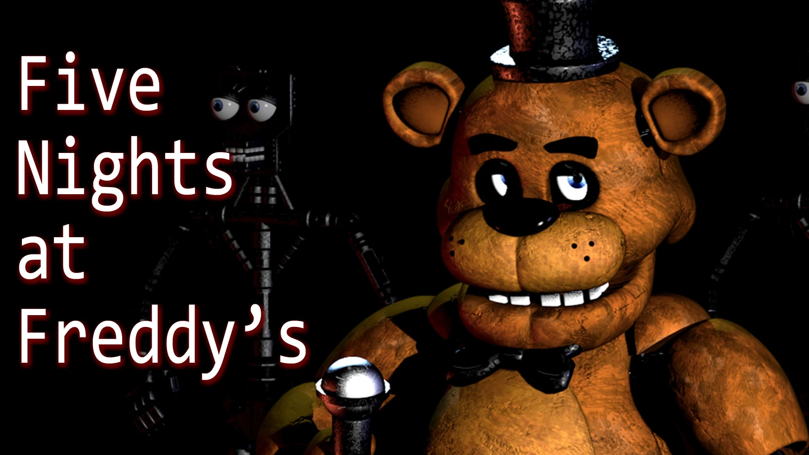
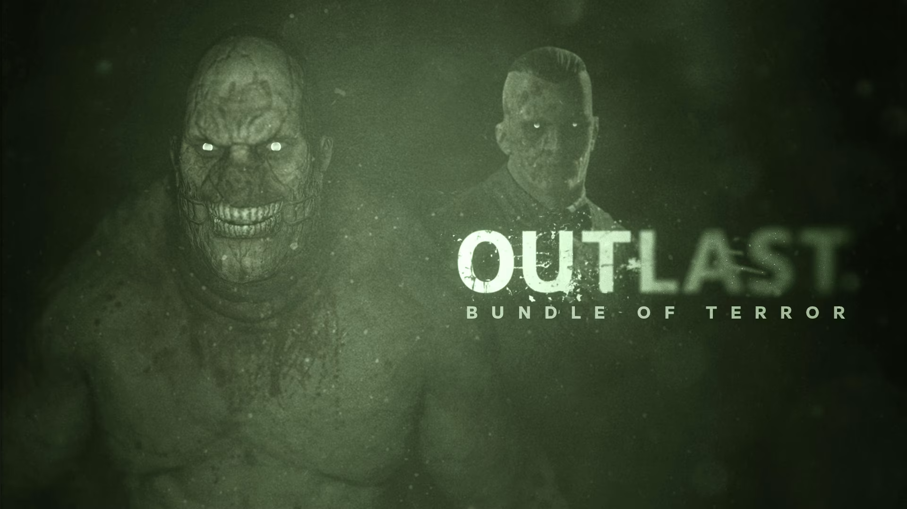
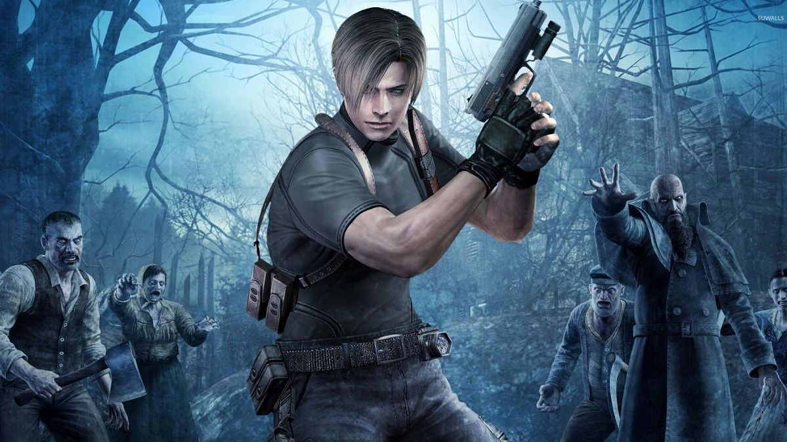
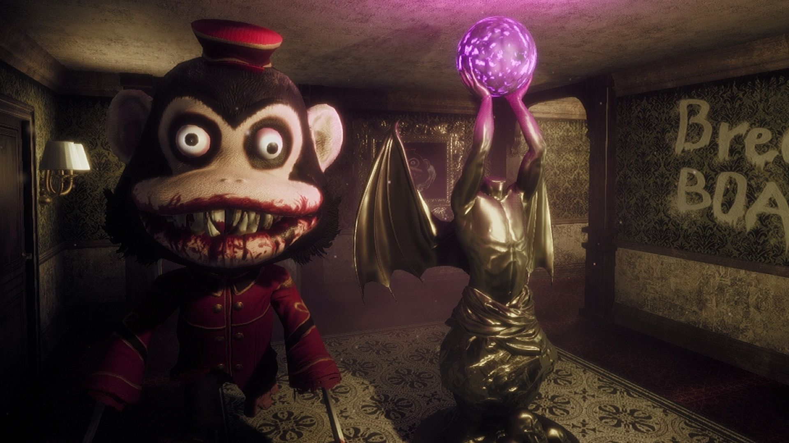
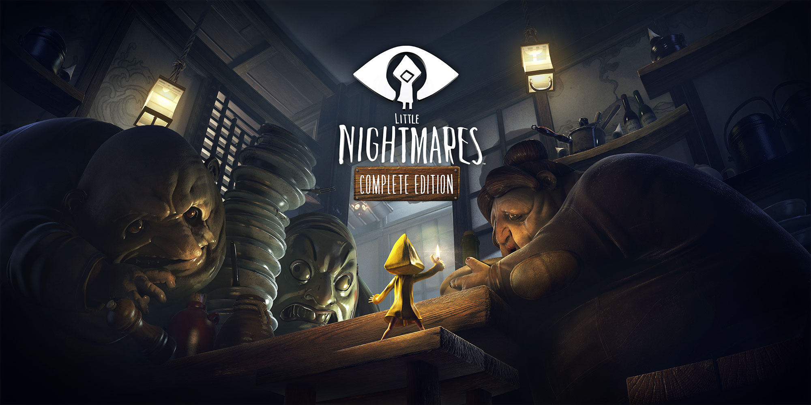
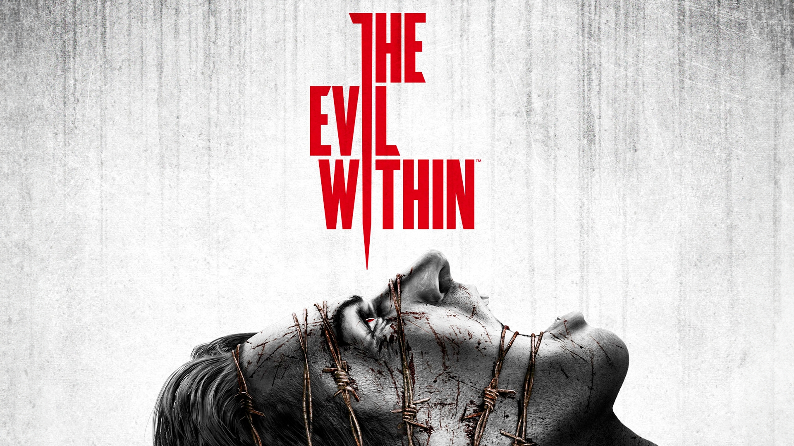
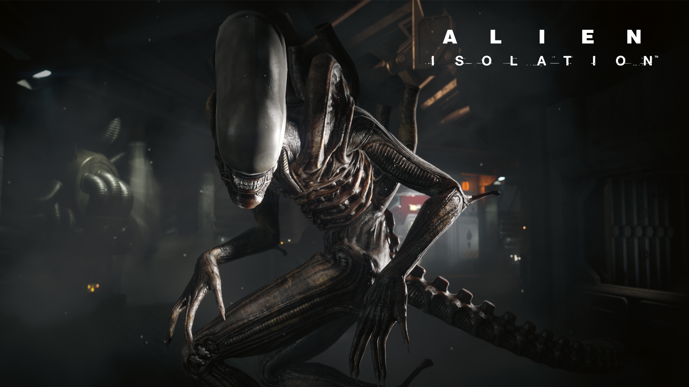
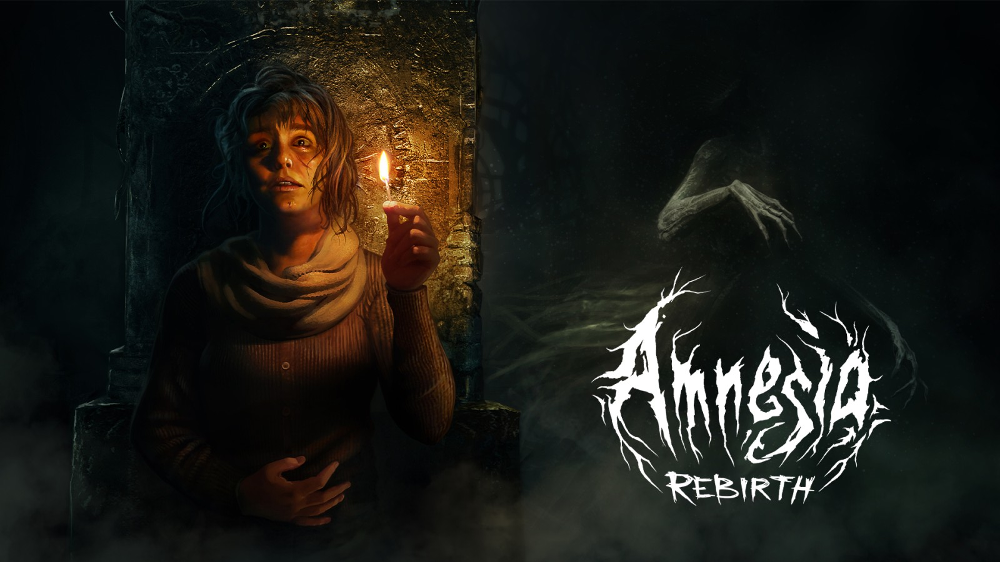
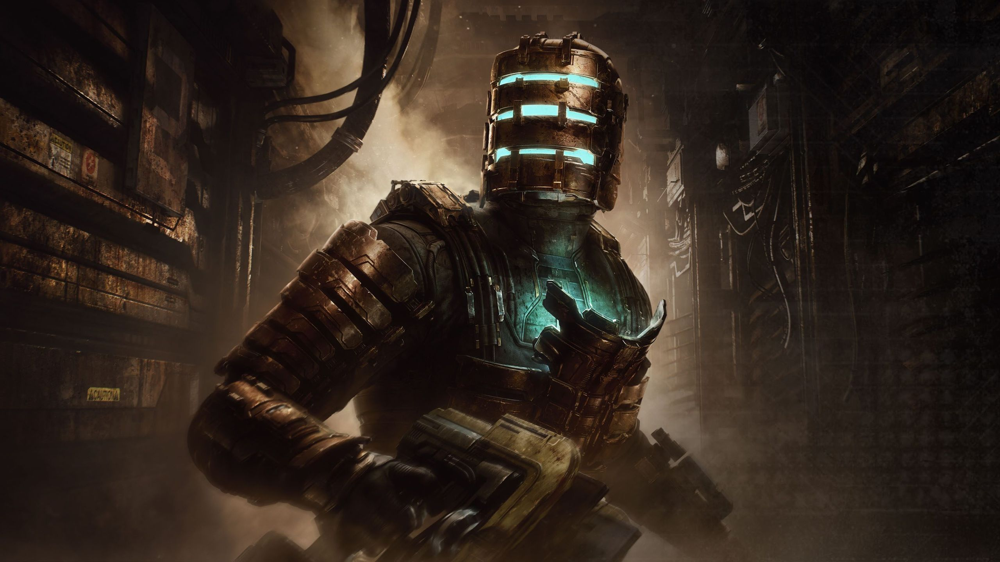
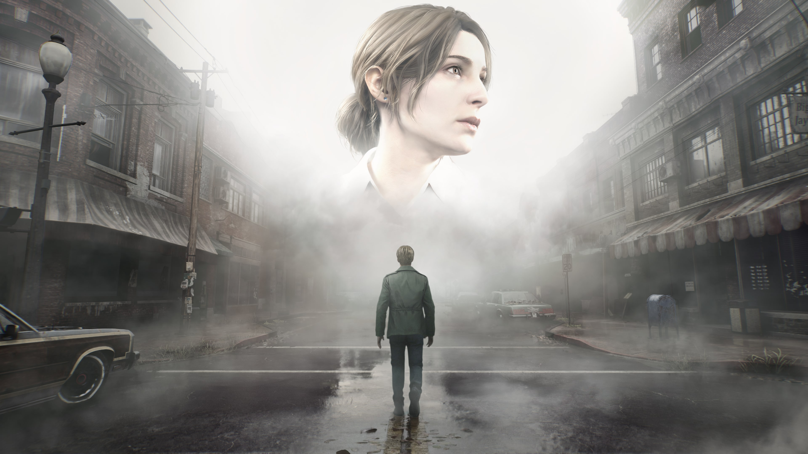

Nuestro top 10 videojuegos de terror
¿Preparado para pasar miedo? El género de terror ha evolucionado desde los sustos clásicos en pasillos oscuros hasta experiencias psicológicas que se quedan contigo mucho después de apagar la pantalla. En este top 10 reunimos las entregas más espeluznantes, atmosféricas e imprescindibles del videojuego. Prepara los auriculares, apaga las luces y descubre si tus favoritos lograron entrar en la lista.
Top 10: Five Nights at Freddy's

Five Nights at Freddy's (FNAF) revolucionó el género del survival horror independiente al convertir un trabajo de vigilancia nocturna en una claustrofóbica pesadilla. Tu objetivo es simple: sobrevivir de 12:00 AM a 6:00 AM en la pizzería Freddy Fazbear's Pizza. La complicación: los adorables animatrónicos del restaurante cobran vida por la noche con intenciones letales.
Top 9: Outlast

Outlast llevó la indefensión a su máxima expresión al despojar por completo al jugador de cualquier forma de combate. Asumes el papel del periodista de investigación Miles Upshur, quien se adentra en el abandonado manicomio Mount Massive tras recibir un soplo anónimo, solo para descubrir que el lugar ha sido tomado por experimentos horripilantes y pacientes violentos.
Top 8: Resident Evil

Resident Evil es el titán indiscutible que definió y popularizó el concepto de survival horror. Desde los claustrofóbicos pasillos de la Mansión Spencer en el juego original hasta las brutales persecuciones de Resident Evil 7 y Village, la franquicia de Capcom ha demostrado una capacidad única para reinventarse sin perder su esencia.
Top 7: Dark Deception

Dark Deception reimagina la fórmula clásica de los juegos de arcade al transformar la mecánica de recolección en un laberinto en una pesadilla frenética y de ritmo implacable. Atrapado en un reino de pesadilla gobernado por la misteriosa Helen Bierce, tu objetivo es atravesar oscuros pasillos recopilando fragmentos de alma para poder escapar, mientras monstruos grotescos te dan caza sin descanso.
Top 6: Little Nightmares

Little Nightmares demuestra que no hacen falta sustos fáciles (jumpscares) para crear una experiencia profundamente perturbadora. En este aclamado título de plataformas y puzles, controlas a Six, una pequeña niña vestida con un chubasquero amarillo que despierta atrapada en Las Fauces (The Maw), una gigantesca y retorcida nave sumergida habitada por criaturas gigantescas, grotescas y obsesionadas con el consumo excesivo.
Top 5: The Evil Within

The Evil Within es una auténtica carta de amor al survival horror más visceral y grotesco, dirigida por el legendario Shinji Mikami, creador de Resident Evil. El juego sigue al detective Sebastian Castellanos mientras investiga una masacre en un hospital psiquiátrico, solo para ser arrastrado a un mundo surrealista donde la realidad se deforma, la gravedad se rompe y las peores pesadillas cobran vida.
Top 4: Alien Isolation

Alien Isolation es considerado por muchos la adaptación definitiva del cine al videojuego y uno de los títulos más asfixiantes jamás creados. Ambientado 15 años después de los eventos de la película original de 1979, encarnas a Amanda Ripley, quien viaja a la desolada estación espacial Sevastopol para recuperar la caja negra de la nave de su madre, solo para encontrarse atrapada en una carnicería espacial.
Top 3: Amnesia

La saga Amnesia, desarrollada por Frictional Games (con la excepción de A Machine for Pigs, creado por The Chinese Room), es una de las franquicias más influyentes de la historia del survival horror. Su llegada cambió para siempre el rumbo del género al eliminar por completo el combate y obligar al jugador a experimentar el terror desde una indefensión absoluta, donde la supervivencia depende exclusivamente de la gestión del entorno, la luz y la cordura.
Top 2: Dead Space

Dead Space redefinió la ciencia ficción y el survival horror al trasladar el terror corporal (body horror) al espacio profundo. Encarnas a Isaac Clarke, un simple ingeniero enviado a reparar la nave minera USG Ishimura, solo para descubrir que la tripulación ha sido masacrada y mutada por un artefacto alienígena conocido como la Efigie.
Top 1: Silent Hill

La saga Silent Hill, nacida de la mano de Konami y el legendario Team Silent, es el referente absoluto del terror psicológico en la industria. A diferencia de las amenazas biológicas o los monstruos convencionales, esta franquicia transformó el género al explorar el trauma, la culpa, el fanatismo religioso y la decadencia mental, convirtiendo a la icónica ciudad envuelta en niebla en un purgatorio viviente que adopta la forma de los demonios internos de quienes la visitan.